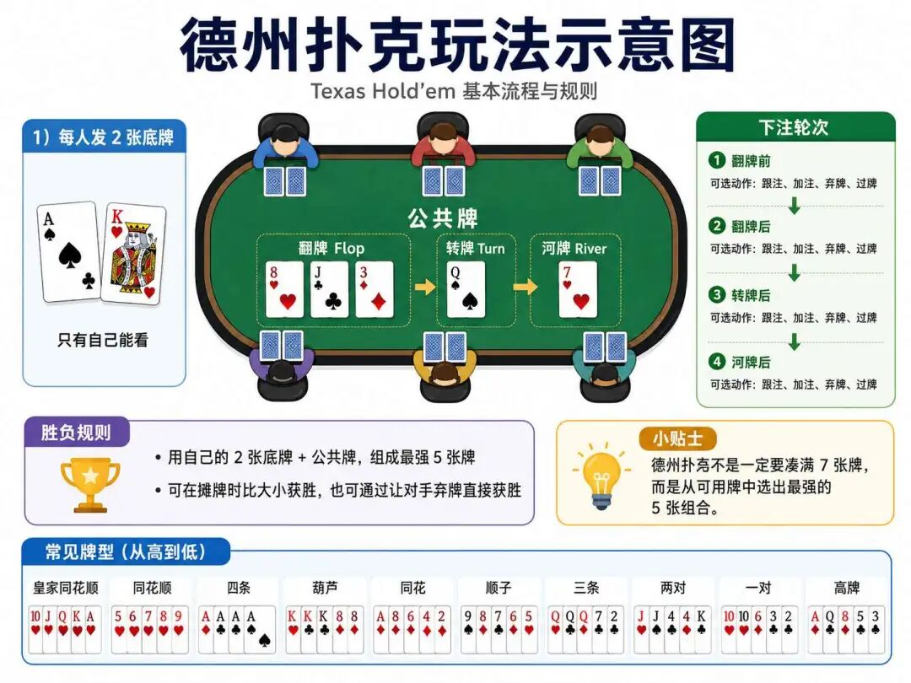
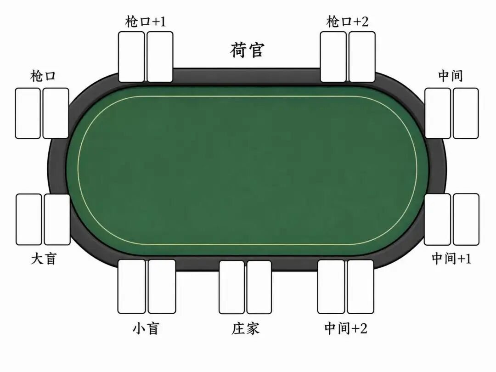

"策略决定行为，反馈塑造策略"--理查德·萨顿（Richard Sutton），强化学习先驱
文章写到这里，不知不觉已经接近尾声了，持续一路学习，相信大家都比较辛苦，所以现在和大家放松一下，轻松娱乐一把。
这里我将用最快最易懂的方式给大家介绍一下德州扑克的玩法，并藉此机会，为今天要进入的新篇章作个铺垫：策略梯度算法。
德州扑克的赢有两种方法，
一种是直接摊牌获胜，亮牌后组合出比对手更强的5张牌型，这种情况适用于手牌强（如成顺、成花）且对手不弃牌时。
另外一种是迫使对手弃牌（诈唬），通过加注施压，让对手误判你的牌力而放弃；这就很讲究技巧，比如要根据底池赔率合理控制诈唬频率，避免被对手摸清规律；
首先我们来看看德州扑克的牌型大小，德州扑克使用7张牌（2张底牌+5张公共牌）组合成最强5张牌型，牌型大小规则如下：
| 牌型 | 组成规则 | 比牌逻辑 | 举例 |
|---|---|---|---|
| 皇家同花顺 | 同花色A-K-Q-J-10 | 直接获胜，无需比单张 | ♠A♠K♠Q♠J♠10 |
| 同花顺 | 同花色连续5张牌 | 比最高单张（如K高>Q高） | ♥9♥8♥7♥6♥5 |
| 四条 | 四张同点数+任意一张 | 先比四张点数，再比单张（踢脚） | ♦K♦K♣K♥K♠7 |
| 葫芦 | 三张同点+一对（如888+77） | 先比三张点数，再比对子 | ♣Q♣Q♦Q♠7♠7 |
| 同花 | 同花色非连续5张 | 从最大单张开始逐张比较 | ♠A♠Q♠8♠5♠2 |
| 顺子 | 不同花色连续5张（A可作1或14） | A2345是最小顺，10JQKA是最大顺 | ♥10♦9♣8♠7♣6 |
| 三条 | 三张同点+两张单牌 | 先比三张点数，再比最大踢脚 | ♣5♦5♥5♠K♠9 |
| 两对 | 两对+一张单牌 | 先比大对，再比小对，最后比单张 | ♠A♠A♦K♦K♣7 |
| 一对 | 一对+三张单牌 | 先比对子，再逐张比踢脚 | ♥J♥J♦9♣8♠3 |
| 高牌 | 无以上组合 | 从最大单张开始逐张比较 | ♦A♣K♥Q♠10♣8 |
这里面有几条关键的规则：
（1）花色无大小：♥A与♠A等价；
（2）平分底池：牌型与所有单张均相同时，筹码均分；
（3）踢脚牌：牌型相同时，剩余单张决定胜负（如AA+♣K > AA+♣Q）。
| 动作 | 使用条件 | 使用场景 | 技巧 |
|---|---|---|---|
| 弃牌 | 任意轮次 | 底牌弱（如72o）、对手下注过大时 | 及时止损，保留筹码 |
| 过牌 | 无人下注时 | 牌中等，想免费看下一张公共牌 | 后位可诱诈唬 |
| 跟注 | 有人下注后 | 牌中等，赔率合适（底池赔率≥25%） | 计算补牌数（如听花有9张） |
| 加注 | 有人下注后 | 强牌（如AA）或诈唬时 | 隔离弱手，缩小对手范围 |
| 全下 | 筹码少或手握坚果牌 | 短码时推All-in逼迫对手高风险跟注 | 避免用中等牌全下 |

📌 位置优势：
庄位（BTN）：最后行动，可观察对手反应后决策；
枪口位（UTG）：最先行动，仅玩顶级牌（AA/KK/AK）。

DQN虽然可以学会如何玩游戏，在跟德州扑克新手的博弈中，可能还能表现得很好，但是其策略的僵化模式，导致其在复杂场景下表现并不理想。
假设下面这个牌局，DQN智能体（作为庄家）的手牌是8♥ 7♥，公共牌翻牌是6♥ 5♠ 2♥。此时它有一个同花听牌兼顺子听牌，牌力很强。
面对一个保守的对手：对手在翻牌圈只是跟注。此时，诈唬（加注） 和慢玩（过牌，引诱对手在后续牌圈下注） 都是合理的选项。一个优秀的、策略灵活的AI应该能以一定的概率混合使用这两种策略，让对手无法捉摸。
但由于过估计和确定性策略，DQN很可能会僵化地选择它认为Q值更高的一个动作。比如，它可能因为高估了立即加注的收益，而总是选择加注。几次对局后，人类对手就会识别出这个模式：“只要这个机器人在这样的牌面加注，它要么是超强听牌，要么是已经成牌。”
于是，当DQN真正持有强牌时，对手会轻易弃牌，让其无法赢得更多筹码；而当DQN尝试诈唬时，对手可能会因为读懂了其模式而勇敢跟注抓诈。
策略梯度算法，则打破了这种策略僵化的束缚，它绕过了价值公式，对策略直接进行优化。
策略梯度算法（Policy Gradient, PG）的早期代表是 Ronald Williams 于 1992 年提出的 REINFORCE 算法，随后 Richard S. Sutton 等人于 1999 年在论文《Policy Gradient Methods for Reinforcement Learning with Function Approximation》中提出策略梯度定理，对 REINFORCE 等早期方法进行了理论统一和推广。该算法通过直接优化策略参数，绕开了传统值函数方法的局限性，成为强化学习的核心范式之一。
策略梯度定理的核心思想是：对策略进行参数化，通过调整策略参数 $\theta$，增加高价值动作的概率，减少低价值动作的概率。
$$ \nabla_\theta J(\theta) = \mathbb{E}_{\tau \sim \pi_\theta} \left[ \sum_{t=0}^T \nabla_\theta \log \pi_\theta(a_t|s_t) \cdot Q^{\pi_\theta}(s_t, a_t) \right] $$注释版：
$$ \underbrace{\nabla_\theta J(\theta)}_{\text{策略目标函数梯度}} = \underbrace{\mathbb{E}_{\tau \sim \pi_\theta}}_{\substack{\text{对策略}\pi_\theta \\ \text{生成的轨迹}\tau\text{取期望}}} \left[ \underbrace{\sum_{t=0}^T}_{\text{对轨迹时间步求和}} \underbrace{\nabla_\theta \log \pi_\theta(a_t|s_t)}_{\text{策略对数概率梯度}} \cdot \underbrace{Q^{\pi_\theta}(s_t, a_t)}_{\text{策略}\pi_\theta\text{下的动作价值}} \right] $$该公式表明梯度方向由动作对数概率的梯度与动作价值函数Q 的乘积决定，通过调整 $\theta$ 使高价值动作的概率增加。
在强化学习策略梯度算法中，通过计算梯度来直接优化策略的核心思想，本质上利用了梯度方向指示函数增长最快路径这一数学原理。而策略优化的目标正是最大化期望累积奖励（即寻找目标函数的极大值），这与微积分中梯度求极值的逻辑一脉相承，
策略梯度定理的核心思想是：通过调整策略参数 $\theta$，增加高价值动作的概率，减少低价值动作的概率。具体实现步骤为：
我们从训练优化的视角分部分来拆解，加深对策略梯度算法的理解：
首先将策略表示为可优化的参数化函数，优化目标是找到策略参数 $\theta$，使得智能体在环境中执行动作序列（轨迹T ）后获得的累积折扣奖励期望值最大化：
$$ J(\theta) = \mathbb{E}_{\tau \sim \pi_\theta} \left[ \sum_{t=0}^T \gamma^t r_t \right] $$注释版：
$$ \underbrace{J(\theta)}_{\text{策略}\pi_\theta\text{的目标函数}} = \underbrace{\mathbb{E}_{\tau \sim \pi_\theta}}_{\substack{\text{对策略}\pi_\theta \\ \text{生成的轨迹}\tau\text{取期望}}} \left[ \underbrace{\sum_{t=0}^T}_{\text{对轨迹时间步求和}} \underbrace{\gamma^t}_{\text{折扣因子的时序衰减项}} \underbrace{r_t}_{\text{时间步}t\text{的即时奖励}} \right] $$其中 $\gamma \in [0,1]$ 为折扣因子，平衡即时与未来奖励。
最终结果如果是离散动作我们可以采用softmax函数。而针对连续动作，则可以采用高斯分布，均值μ和方差σ的神经网络输出。
轨迹采样，是使用当前策略 $π_{\theta}$ 与环境交互，生成完整轨迹 。$\tau = (s_0, a_0, r_0, s_1, a_1, r_1, \dots, s_T)$
每一步动作按概率采样：$a_t \sim \pi_{\theta}(\cdot|s_t)$， 采样需覆盖多样“状态-动作对”，保障探索性。
通过计算每个时刻的累积奖励评估动作的价值：即从时刻 t 到结束的折扣奖励和。
$$ G_t = \sum_{k=t}^{T} \gamma^{k-t} r_k $$直接利用策略梯度定理对参数更新，这也是策略梯度算法的核心：
$$ \nabla_{\theta} J(\theta) = \mathbb{E}_{\tau \sim \pi_\theta}\left[ \sum_{t=0}^{T} \underbrace{\nabla_{\theta} \log \pi_{\theta}(a_t | s_t)}_{\text{调整动作概率强度}} \cdot \underbrace{Q^{\pi}(s_t, a_t)}_{\text{动作长期价值}} \right] $$该公式的本质是通过评估动作的长期价值（Q 或 A），调整策略参数 $\theta$ 以增加高回报动作的概率，最终实现期望回报最大化。
这里有几个问题需要进行澄清：
a.为什么是对数概率？
$\log \pi_\theta(a_t|s_t)$ 的梯度 $\nabla_\theta \log \pi_\theta$ 本质是调整动作概率的强度：
b.为什么用Q函数？
$Q(s_t,a_t)$ 替代原始奖励 $r_t$，解决了长期奖励分配问题（Credit Assignment），使动作的评估包含未来影响。
动作调整机制：梯度更新直接修改策略参数 $\theta$，进而改变动作概率分布 $\pi_\theta(a|s)$。
$$ \theta \leftarrow \theta + \alpha \nabla_{\theta} J(\theta) $$梯度指明了参数更新的方向：
效果：策略逐步收敛至高回报动作概率更高的分布。
策略梯度的更新过程也可通俗理解为 “加权评分-概率调整”机制：
a. 轨迹评分
每条轨迹的总奖励 $R(t)$ 是对该路径的“评分”（如一次篮球训练的得分总和）。
b. 动作责任划分
轨迹由一系列动作组成。策略梯度通过数学技巧（log概率梯度）计算出每个动作对总奖励的贡献权重（如投篮动作占得分的70%，运球占30%）。
c. 梯度更新逻辑
梯度公式的本质是通过总奖励调整动作权重，若总奖励高，且动作权重高 → 大幅提升该动作概率；若总奖励低，但动作权重高 → 大幅降低该动作概率。
# 1
初始化策略网络 π_θ(a|s) # 输入状态s，输出动作概率分布
定义学习率 α, 折扣因子 γ
初始化优化器（如Adam）
# 2
for 轮次 in 范围(最大训练轮次):
# 3. 采样轨迹
状态 s = 环境重置()
轨迹 = {状态列表: [], 动作列表: [], 奖励列表: [], 对数概率列表: []}
done = False
while not done: # 采样一条完整轨迹
# 前向传播：计算动作概率
动作概率分布 = π_θ(s)
动作 = 根据概率分布采样动作() # 如Categorical分布采样
对数概率 = log(动作概率分布[动作]) # 记录动作的对数概率
# 执行动作，获取环境反馈
新状态, 奖励, done, _ = 环境执行(动作)
# 存储数据
轨迹.状态列表.append(s)
轨迹.动作列表.append(动作)
轨迹.奖励列表.append(奖励)
轨迹.对数概率列表.append(对数概率)
s = 新状态 # 更新状态
# 4. 计算折扣累积奖励（从后向前回溯）
折扣奖励列表 = []
G = 0 # 累计奖励初始化
for 奖励 in 轨迹.奖励列表[::-1]: # 逆序遍历奖励
G = 奖励 + γ * G # 更新累积奖励
折扣奖励列表.insert(0, G) # 插入到列表头部
# 5. 标准化折扣奖励（降低方差）
标准化奖励 = (折扣奖励列表 - 均值(折扣奖励列表)) / 标准差(折扣奖励列表)
# 6. 计算策略梯度损失
损失 = 0
for 对数概率, G_t in zip(轨迹.对数概率列表, 标准化奖励):
# 核心梯度公式：损失 = -对数概率 * G_t （梯度上升转梯度下降）
损失 += -对数概率 * G_t
# 7. 反向传播与参数更新
优化器.梯度清零()
损失.反向传播() # 计算梯度 ∇θ
优化器.更新参数() # θ ← θ + α * ∇θ
# 8. 日志记录
打印(f"轮次: {轮次}, 总奖励: {sum(轨迹.奖励列表)}")
# 9
保存模型(π_θ)策略梯度定理的提出，为强化学习的实现提供了新的理论视角，但是其毕竟还是一个理论的研究，距离真正落地，并还没有工程上的实现。
而REINFORCE算法由 Ronald Williams 于 1992 年提出，早于 Sutton 等人的策略梯度定理，是策略梯度算法最早的工程实现之一。我们来看看REINFORCE算法是怎么把策略梯度思想落地的。
在原始策略梯度理论中，梯度更新依赖于动作价值函数 $Q^π(s_t, a_t)$，但在工程实践中要精确得到 $Q^π$ 并不容易——要么需要环境的状态转移概率 $P(s'|s,a)$（即依赖模型），要么需要额外训练一个价值网络去估计，这给落地带来了不小的成本。
REINFORCE的核心改造是将 $Q^π(s_t, a_t)$ 替换为蒙特卡洛回报 $G_t$，我们在之前学习过，蒙特卡洛方法通过不断进行实验得到累积回报，是可以解决贝尔曼期望对模型强依赖问题的。
$$ \nabla_\theta J(\theta) \approx \mathbb{E}_{\tau \sim \pi_\theta} \left[ \sum_{t=0}^{T} \nabla_\theta \log \pi_\theta(a_t|s_t) \cdot G_t \right] $$回顾改造前策略梯度公式：
$$ \nabla_\theta J(\theta) = \mathbb{E}_{\tau \sim \pi_\theta} \left[ \sum_{t=0}^T \nabla_\theta \log \pi_\theta(a_t|s_t) \cdot Q^{\pi_\theta}(s_t, a_t) \right] $$REINFORCE 核心改造将 $Q^{\pi_\theta}(s_t, a_t)$ 替换为蒙特卡洛累积回报 $G_t$：
$$ G_t = \sum_{k=t}^{T} \gamma^{k-t} r_k $$$G_t$ 代表了从时刻 t 开始的折扣累积回报。$G_t$ 仅需从轨迹数据 ($s_t, a_t, r_t$) 直接计算，无需环境转移概率；
REINFORCE 将理论期望转化为单条轨迹的采样平均：
$$ \nabla_\theta J(\theta) \approx \sum_{t=0}^{T} \nabla_\theta \log \pi_\theta(a_t|s_t) \cdot G_t $$这里关键的改动就是移除了 $E$ 算子，直接用单轨迹数据计算梯度，回顾之前带 $E$ 算子公式：
$$ \nabla_\theta J(\theta) \approx \mathbb{E}_{\tau \sim \pi_\theta} \left[ \sum_{t=0}^{T} \nabla_\theta \log \pi_\theta(a_t|s_t) \cdot G_t \right] $$但在实际使用中会采用多条轨迹的平均：
$$ \nabla_\theta J(\theta) \approx \frac{1}{N} \sum_{i=1}^N \sum_{t=0}^{T_i} \nabla_\theta \log \pi_\theta(a_{i,t}|s_{i,t}) G_{i,t} $$蒙特卡洛估计起到的作用是通过单条轨迹采样近似期望，实现工程落地。通过单条轨迹直接计算 $G_t$，无需依赖环境模型、也不必额外维护价值网络，从而实现端到端的无模型（Model-Free）优化。
但是蒙特卡洛方法有个天生的问题，就是采样过程的方差过大，为抑制蒙特卡洛估计的高方差，REINFORCE 引入基线函数 $b(s_t)$：
$$ \nabla_\theta J(\theta) \approx \sum_{t=0}^{T} \nabla_\theta \log \pi_\theta(a_t|s_t) \cdot (G_t - b(s_t)) $$当 $b(s_t)$ 选择得当（例如取状态价值 $V(s_t)$ 作为基线）时，$\text{Var}(G_t - b(s_t)) < \text{Var}(G_t)$，能够显著降低梯度估计的方差，且不会引入偏差。
通过以上改造，REINFORCE算法的出现主要解决了传统强化学习方法的三大核心问题：
1、连续动作空间的挑战
在Q-learning等基于价值的方法中，需遍历所有动作选择最大值，但连续动作空间（如机器人控制）无法穷举动作。REINFORCE通过直接参数化策略函数（如神经网络输出动作概率分布），避开了动作空间的遍历需求。
2、随机策略的建模需求
基于价值的方法（如DQN）隐含确定性策略，但实际场景（如博弈、探索）需随机策略（如以概率选择不同动作）。REINFORCE通过策略网络输出动作概率分布，天然支持随机策略。
3、高维状态空间的效率问题
传统表格型方法（如动态规划）在高维状态空间（如图像输入）中失效。REINFORCE结合神经网络，可处理高维状态输入，实现端到端策略优化。
REINFORCE算法的中文伪代码：
# ===== 1. =====
输入：
环境 env
策略网络 PolicyNet（输入：状态，输出：动作概率分布）
学习率 α
折扣因子 γ
是否使用基线 use_baseline（默认False）
基线网络 BaselineNet（若使用基线，需初始化）
初始化：
策略网络参数 θ ← 随机初始化
若 use_baseline:
初始化基线网络参数 ϕ（如状态值函数V(s)的神经网络）
初始化基线优化器
# =========================
# ===== 2. =====
for 回合数 in 范围(最大回合数):
# 🎮 2.1 采集单条轨迹数据
states, actions, rewards = [], [], [] # 存储状态、动作、奖励
s = env.reset() # 重置环境
done = False
while not done: # 交互直至回合结束
π = PolicyNet(s) # 策略网络输出动作概率
a ~ 分类分布(π) # 依概率采样动作（如np.random.choice）
s_next, r, done = env.step(a) # 执行动作
# 记录数据
states.append(s)
actions.append(a)
rewards.append(r)
s = s_next # 更新状态
# 🧮 2.2 计算折扣累积回报（蒙特卡洛方法）
returns = [] # 存储每步的累积回报
G = 0
for r in reversed(rewards): # 从轨迹末端反向计算
G = r + γ * G # 更新当前步的折扣回报
returns.insert(0, G) # 插入列表头部（保持时间顺序）
# ⚖️ 2.3 回报标准化（降低方差）
returns = (returns - np.mean(returns)) / (np.std(returns) + 1e-8)
# 🤖 2.4 若使用基线，计算优势函数
if use_baseline:
advantages = []
for t in range(len(states)):
V_t = BaselineNet(states[t]) # 预测状态值V(s_t)
A_t = returns[t] - V_t # 优势函数 = 回报 - 基线值
advantages.append(A_t)
update_target = advantages # 用优势函数替代原始回报
else:
update_target = returns
# 🧪 2.5 策略梯度更新
policy_grad = 0 # 初始化梯度累加器
for t in range(len(states)):
s_t = states[t]
a_t = actions[t]
A_t = update_target[t] # 更新目标（回报或优势函数）
# 📐 计算动作对数概率的梯度
log_prob = log( PolicyNet(s_t)[a_t] ) # 动作a_t的对数概率
grad_θ_log = ∇θ(log_prob) # 对数概率对θ的梯度
# ➕ 累加梯度（损失函数 = -log_prob * A_t）
policy_grad += -grad_θ_log * A_t # 梯度上升方向
# ⬆️ 2.6 更新策略网络参数
θ = θ + α * policy_grad # 梯度上升更新策略网络
# 🔄 2.7 若使用基线，更新基线网络（均方误差损失）
if use_baseline:
for t in range(len(states)):
target = returns[t] # 目标值 = 蒙特卡洛回报
V_pred = BaselineNet(states[t]) # 基线网络预测值
loss = (target - V_pred)**2 # 均方误差
ϕ = ϕ - ∇ϕ(loss) * α_baseline # 梯度下降更新基线网络
# ======================================我们再用一个生活化的案例，理解策略梯度的思想，想象你是个学生，每次考试都想拿更高分。你的学习方法（比如：每天学2小时、重点背公式、多做练习题）就是策略参数 θ。公式里的 J(θ) 就是你用这套方法长期能拿到的平均总分。强化学习的目标就是调整学习方法（$θ$），让你未来考试总分（$J(θ)$）越来越高。
公式：J(θ) = 期望值 [R(τ)]
公式核心：调整 θ，让平均总分 J(θ) 越来越高。怎么做？
✅ 最终效果：通过反复尝试，把技能（θ）调整到能稳定拿高分的配置！
这个方法就像有个“智能教练”盯着你每次考试的每一步，告诉你：“这题做对了，下次继续这么干！”或“这题错了，换种思路！” 。 久而久之，你的学习方法（θ）就越来越牛啦！
不过，REINFORCE 虽然思路清晰，却要等到整条轨迹走完才能更新，方差大、收敛慢。下一篇我们就来看看 Actor-Critic 是如何引入价值网络、把“回合结账”改成“边走边学”，从而破解这两大难题的。
策略梯度算法（Policy Gradient, PG） 一类绕过价值函数、直接对策略本身进行参数化并优化的强化学习方法。它不再像 DQN 那样"先估值、再贪心选动作"，而是把策略表示为一个带参数 θ 的概率分布，通过梯度上升直接调整 θ，让高回报动作的概率上升、低回报动作的概率下降。这一思路打破了基于价值方法中确定性策略的僵化，是通往现代策略优化算法（如 PPO）的起点。
确定性策略的僵化困境 以 DQN 为代表的价值方法，因过估计与确定性贪心选择，在每个状态下总是固定输出它认为 Q 值最高的那个动作。在德州扑克这类需要混合策略、隐藏意图的博弈中，这种可预测的模式会被对手识破，导致强牌赚不到价值、诈唬被轻易抓住。这正是引入策略梯度的现实动因，博弈场景天然需要随机策略。
策略梯度定理（Policy Gradient Theorem） 策略梯度的核心数学结论：目标函数的梯度等于"动作对数概率的梯度"与"动作价值"两者乘积的期望。它揭示了参数更新的方向，由动作的好坏（价值）来加权调整选择该动作的倾向（概率），从而把"如何让策略变好"这一抽象目标转化为可计算的梯度。
对数概率技巧（Log-Probability Trick） 梯度公式中之所以是 $\nabla_\theta \log \pi_\theta(a_t|s_t)$ 而非概率本身，是因为对数变换把连乘的轨迹概率转为求和、便于求导，同时让梯度成为"调整动作概率的强度信号"：价值为正则推高该动作概率，价值为负则压低，方向与幅度一目了然。
目标函数 J(θ) 与轨迹（Trajectory, τ） J(θ) 定义为策略 π_θ 所生成轨迹的累积折扣奖励的期望，是衡量一套策略好坏的总分。轨迹 τ 则是一次完整交互的全记录，状态、动作、奖励依时间排成的序列 $(s_0, a_0, r_0, \dots, s_T)$，相当于"一局完整的通关录像"。强化学习的优化，本质就是反复采样轨迹、再据其总分回头调整策略。
蒙特卡洛回报（Monte Carlo Return, $G_t$） 从时刻 t 到回合结束的折扣奖励之和 $G_t = \sum_{k=t}^{T}\gamma^{k-t} r_k$。它最大的价值在于"可直接从经验中算出”，只需跑完一整条轨迹即可获得，无需依赖环境的转移概率，也不必额外训练价值网络。这正是 REINFORCE 实现无模型（Model-Free）优化的关键。
REINFORCE 算法 第一个让策略梯度真正具备工程可行性的算法。它做了三步关键改造：用蒙特卡洛回报 $G_t$ 替代难以精确获得的动作价值函数 $Q^\pi$；将理论上的期望简化为多条采样轨迹的平均；并引入基线进一步降低方差。由此把停留在纸面的策略梯度定理变成了可跑通的训练流程。
基线（Baseline, b(s)）与优势函数（Advantage, A） 蒙特卡洛回报虽无偏，但方差极大、训练不稳。基线的做法是从回报中减去一个只与状态有关的参照值 b(s)，常取状态价值 V(s)，此时 $G_t - V(s_t)$ 就成了优势函数 A，衡量某动作相对该状态平均水平"好多少"。当基线选取得当时，方差显著下降而不引入偏差，这是策略梯度算法稳定训练的通用技巧。
随机策略的天然支持（Stochastic Policy） 策略网络直接输出动作的概率分布：离散动作用 softmax，连续动作用高斯分布（输出均值 μ 与方差 σ）。这使得策略梯度天然支持以一定概率混合多种动作，既满足博弈中"不可预测"的需求，也解决了价值方法在连续动作空间中无法穷举取最大值的难题。